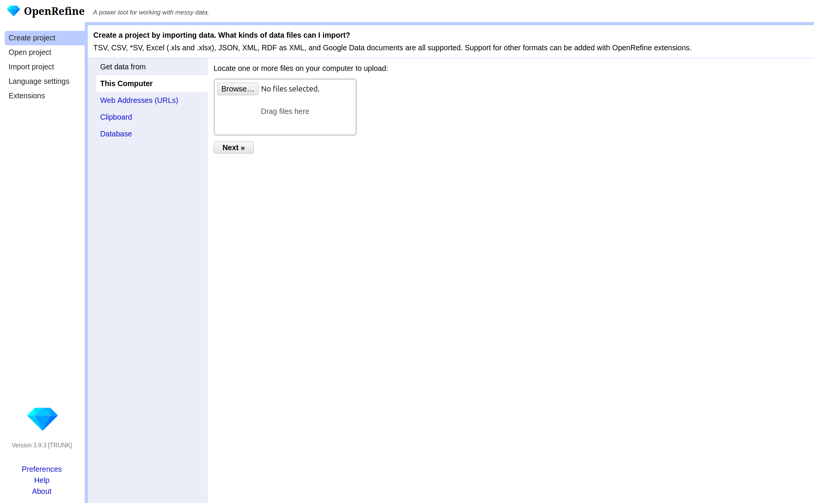
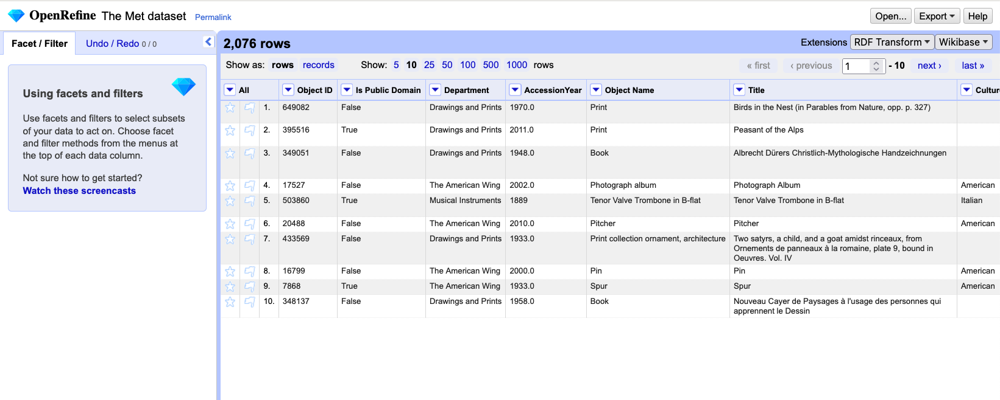

All in One View
Content from Introduction to OpenRefine
Last updated on 2026-05-26 | Edit this page
Overview
Questions
- What is OpenRefine and how can it help with messy data?
- What kinds of tasks and analyses can you perform with OpenRefine?
Objectives
- Identify typical problems in cultural heritage datasets
- Describe how OpenRefine supports exploratory data cleaning
Discussion: Do you often work with digital data in your research, your studies or your work?
For example, cleaning it, processing it, converting it or analyzing it? Do you have an idea what problems could arise when working with data, especially external data?
Before you can answer research questions, you first need to understand and clean your data. In the humanities, you might work with lists of artworks, artists, historical events, or other information collected from museums, archives, or fieldwork. Often, this data is stored in spreadsheets or tables, and at first glance, it may seem tidy. But as you look closer, you may notice small issues: names spelled in different ways, missing details, or dates written in various formats. These challenges are common and can make it difficult to analyze or share your data.
OpenRefine is a free, open-source tool designed to help you work with messy data. Think of OpenRefine as a workbench for your data, a place where you can clean, organize, and explore information, even if you have no technical background. OpenRefine runs locally on your computer and opens in your web browser, providing a user-friendly interface that guides you through each step. Working in your web browser might be confusing, but nothing from your dataset is sent to the internet — everything runs locally on your computer.
Our Dataset
Throughout this lesson, you will use a sample dataset from the Metropolitan Museum of Art’s (The Met) Open Access Initiative. The dataset includes artwork titles, creators, production dates, materials, and locations — fields that are typical for cultural heritage collections. Even if you have never worked with data before, you will see how OpenRefine can make your research easier.
In many digital humanities projects, a significant amount of time is spent preparing and cleaning data before analysis. It’s not always the most exciting part, but it is essential. With OpenRefine, you will learn how to think about data organization and develop practices for more effective data cleaning. By the end of this lesson, participants will be able to clean, explore, and analyze structured cultural heritage data. You don’t need to be a technical expert, just curious and willing to try something new.
Challenge: Spot the Messy Data
Look at the small sample below. It contains only a few records from
The Met dataset you will work with later.
Identify anything that might cause problems during analysis.
| Title | Artist Display Name | Object Date | Object Name | City | Tags | Medium |
|---|---|---|---|---|---|---|
| Tile | J. and J. G. Low Art Tile Works | ca. 1884 | Tile | Chelsea | Earthenware | |
| Cabrette | Joseph Bechonnet | 19th century | Cabrette | Effiat, Puy-de-Dôme | Animals | various material |
| “A weaver of dreams” | Margaret Neilson Armstrong; G.P. Putnam & Co., New York; Myrtle Reed | 1911 | New York | |||
| Design for a shawl with scrolling paisley leaves and Indian flowers | Fleury Chavant; Georges Schlatter; J.E.G.; Herault | [after 1844] | Book Print Ornament, Architectur | Paris | Lithograph | |
| Nouveau Cayer de Paysages à l’usage des personnes qui apprennent le Dessin | J. B. Crépy | 1781 | Book | Paris, France | Etching, printed in red |
Questions to discuss:
- What inconsistencies or formatting issues can you spot?
- Which values might make filtering or sorting difficult?
- Are there entries where you would want to investigate further before
analysis?
- Why might these issues matter later in OpenRefine?
- Missing data are sometimes represented by blank cells, N/A or 0.
- Is the title the same as the object name? In some rows they differ in others they are the same.
- The Artist Display Name sometimes contains more people.
- Object dates are often not given as a specific year.
- The cities in the table could be ambiguous, is it Chelsea in the UK or Chelsea in the US? Maybe you can derive a unique location from information about the artist.
- Paris and Paris, France refer to the same place, but are recorded differently.
- Some titles are enclosed in quotation marks, while others are not.
Advantages of OpenRefine
With OpenRefine, you can import your data, discover patterns, fix mistakes, and transform your information so it’s ready for analysis or sharing. You don’t need to know how to code or use complicated software. OpenRefine is built for researchers who want to focus on their work, not on technical details.
One of the strengths of OpenRefine is its ability to help you explore your data and perform simple analysis right from the start. You can quickly filter and sort your data, group similar entries, and visualize distributions to spot trends or outliers. This makes it easy to get a sense of your dataset before diving deeper into research questions. You can also use built-in functions to split or merge columns, remove duplicates, and transform data formats, making your information more consistent and reliable.
OpenRefine supports a wide range of data formats, including CSV, Excel, and JSON, and can connect to online sources and databases. It also allows you to match your data against external databases, such as Wikidata, to enrich your dataset with additional information. Because OpenRefine is open source, it can be extended with add-ons and custom scripts, giving you even more possibilities. The active community around OpenRefine has developed many plugins that add new features, such as connecting to other data sources, exporting to different formats, or automating repetitive tasks.
- OpenRefine is a free, open-source tool for cleaning, organizing, and exploring messy data.
- You can easily import, filter, sort, and analyze your data, even without technical experience.
- OpenRefine supports many data formats and can be extended with add-ons and custom scripts for even more possibilities.
- Using OpenRefine helps you prepare your data for analysis, supporting transparent and reproducible research practices.
Content from Importing Data and Getting to Know the OpenRefine User Interface
Last updated on 2026-05-26 | Edit this page
Overview
Questions
- How do I start a new project in OpenRefine?
- How do I import a CSV file?
- What options and settings are available during import?
- How is the user interface structured?
Objectives
- Create and configure a new OpenRefine project
- Evaluate import settings using the preview pane and import a CSV file
- Identify the core interface components and explain their functions
Importing Data
In this episode, you will import the Metropolitan Museum dataset used throughout the lesson. To begin, open OpenRefine. When you start OpenRefine, a window in your web browser (at the address http://127.0.0.1:3333/) will open and you are greeted by the start page.

There are various options in the left-hand bar. You can:
- Create a new project and load data.
- Open an existing project.
- Import an existing project.
- Change the language of OpenRefine.
- Manage extensions.
OpenRefine structures your work in projects. To begin
working, you first need to create a new project and import The Met
dataset. If you pause your work on the project (the data and the changes
you made) and want to continue later on, you can choose
Open project. If a colleague sends you an OpenRefine
project, you can import it under Import project.
- Click on
Create Projectand then on Get data fromThis Computer. - Here click on
Browse, locate the datasetmet_dataset_oa.csvon your computer and select it. - Click on
Nextand upload the data into OpenRefine. - On the next page OpenRefine will show you a preview of your data, allowing you to check that everything looks correct before you proceed.
Below the data preview, you find various import settings for how the data should be loaded. These settings have a direct effect on the preview above, allowing us to check immediately whether the settings have been selected correctly. This is especially important when files use non-standard formats, as incorrect settings may result in a distorted table structure.
What kinds of data files can I import?
There are several options for getting your dataset into OpenRefine. You can import files in a variety of formats including:
- Comma-separated values (CSV) or text-separated values (TSV)
- Text files
- JSON (javascript object notation)
- XML (extensible markup language)
- RDF (resource description framework)
- OpenDocument spreadsheet (ODS) or Excel spreadsheet (XLS or XLSX)
If needed, you can change the format on the left side under Parse data as. For more information see the Create a project by importing data page in the OpenRefine manual.
Challenge: Import as Interpretation
Let’s test how sensitive the import process is to incorrect settings. Try changing the separator to a semicolon.
In the import preview, change the column separator from comma to semicolon and observe the preview carefully.
Questions:
- How does the table structure change?
- How many columns are displayed now?
- Why does this happen?
- What would happen if you created the project without correcting this setting?
- The table structure collapses.
- Most or all values appear in a single column.
- This happens because the dataset is comma-separated. When the separator does not match the file structure, OpenRefine cannot divide the data into columns correctly.
- The dataset would be imported incorrectly, making further analysis difficult or impossible.
Sometimes, data files include extra header lines or notes at the top. You can tell OpenRefine to skip these lines, so only the actual data is imported. For Excel files, you can select which sheet to import. For CSVs, you can preview and adjust how columns are interpreted. There are many different options depending on the file format and the dataset. In our case, the default settings are sufficient.
Why import settings matter?
Import settings determine how OpenRefine interprets your file and turns it into a table. If these settings are incorrect, data may be split into the wrong columns, rows may be skipped, or values may be read incorrectly. Correct settings help prevent problems later in your workflow and save time.
- Once you are happy with the preview and settings, you can change
your project name above the preview and click
Create Project. - OpenRefine will load your data into its workspace on the next page.
Overview of the OpenRefine interface

The OpenRefine interface is organized around a central workspace. The main window displays the data in a tabular format called the grid, with rows and columns similar to a spreadsheet: A row represents a record in your dataset, and every column represents a type of information. Above the table in the grid header, you can choose how many rows are shown at once, and you can scroll through the columns within the table.
Each column header has a small arrow. Clicking this
arrow opens a drop-down menu with actions that apply only
to that column, such as sorting, faceting, and editing its values: These
are the actions you will learn about in the following chapters
On the left-hand side, the Facet/Filter tab shows all
active filters and facets. These tools allow you to explore the dataset
and to see how your actions affect it. The Undo/Redo tab
records every change you applied to the data. From here, you can step
backward or forward through your changes. Note: All changes are
stored within the OpenRefine project; the original file remains
unchanged. You will use both tabs a lot in the following
chapters.
Lastly, in the right corner of the project bar, the
menu provides access to project-level actions. When you click on
Open..., you return to the start page. The
Help button links to the official OpenRefine documentation.
If you encounter problems in the future, the official documentation is a
useful starting point.
Now that we have successfully imported the dataset and understood the interface, we can begin exploring the data itself.
- OpenRefine organizes your work in projects
- You can import data from different sources and in different formats into OpenRefine
- Adjust import settings to ensure your data is read correctly and preview the results before starting
- The main components of the user interface are the grid, the grid
header, the project bar, and
Facet/Filteras well asUndo/Redotab
Content from Exploring Data
Last updated on 2026-05-26 | Edit this page
Overview
Questions
- What options does OpenRefine offer for data exploration?
- What is a facet and how does it help me explore data?
- How do facets differ from filters?
- What data types exist in OpenRefine?
Objectives
- Define faceting and identify when to use it.
- Define filtering and identify when to use it.
- Create a text facet to get an overview of values in a column.
- Transform values from one data type to another.
- Use Split multi-valued cells to prepare data for accurate faceting and later analysis.
Facets
When we work with data in OpenRefine, one of the first challenges is to make sense of the information that has been imported. Looking at rows of raw data rarely gives us much insight, especially if the dataset is large. What we need is a way of quickly summarizing values, spotting patterns, and finding potential problems such as inconsistent spellings or unexpected categories.
OpenRefine provides a set of tools for this under the name facets. Faceting allows us to group together all of the different values that appear in a column and to see how often they occur. A facet creates a kind of “interactive summary” of the data: it lists all unique values in a column and shows how many times each one appears.
Text Facet
The most commonly used facet type is called text
facet. This facet type applies to all string values. We will
create our first text facet together for the column
Department. Open the column menu with the small arrow next
to the column name and choose Facet → Text facet. A new
panel will appear on the left side of the screen with the unique values
inside the column and the count how often they appear. You can sort the
values alphabetically or by frequency. You can also hover over values to
edit them directly. This simple step immediately transforms a
spreadsheet with hundreds of rows into a clear summary of categories and
also helps to detect first inconsistencies.
Both “Arts of Africa Oceania and the Americas” and “Arts of Africa, Oceania and the Americas” appear in the panel. Since these values most likely refer to the same department, the version without the comma is probably a data entry error. To correct this, identify the incorrect value in the facet list, hover over it, click edit, and change it. This merges all records under the correct spelling by just one action.
You can also click on one department to see only those rows in the table, or select multiple values to combine them by clicking include. Ensure that you undo your selection by pressing exclude, otherwise you will only continue working with a small subset of the data.
Exercise: First insights to your dataset & correct errors
Create a text facet on the columns:
Is Public DomainObject NameCity.
- How many unique values are listed in each column?
- What is the most common value in
Object Nameand how often does it appear? - Can you spot problems in the
Is Public Domaincolumn and can you fix them?
- 4 / 389 / 321 different values.
- The most frequent value is Book with 493 counts.
- There are different spellings: “False”, “false” and “true”, “True”. You can decide for one spelling and edit the others with the edit button.
The difference between Facet and Filters
It is useful to distinguish between facets and filters. Both are ways of focusing on a subset of the data, but they work differently. A filter is like a search box: you type in a word or part of a word, and OpenRefine hides all rows that do not match. A facet, by contrast, gives you an overview of all the distinct values in a column (as you seen in the Challenge above) and lets you select them interactively.
For example, in the Met dataset, the column Department
might contain categories such as “Medieval Art”, “Islamic Arts,” or
“Drawings & Prints.” A text facet on this column
will immediately show you how many artworks belong to each department.
By clicking on one or several values in the facet, you can quickly
restrict your view to only those artworks, and then easily switch back
to the full dataset. So with this functionality you can filter your data
with the help of facet.
Another way of filtering in a distint column is a text filter. When
you choose Filter → Text filter, a search field appears on
the left side. You can type a term to restrict the dataset to matching
rows.
Exercise: Combining Facets and Text Filters
How many prints are in the department “Drawings and Prints”? What difficulties arise when you only use filtering via the include function of the facet?
First, you use a text facet on the column Departments
and filter for the department “Drawings and Prints” via include. Then
you can use a text facet on the column Object Name. When
you include the facet “Print”, you find 281 matching records. However,
as you can see, there are not only “Print”, but also entries such as
“Album Print Ornament”, etc.
To filter for all prints in the department, you can use a text filter and type “print”. There are 665 prints in the department.
Rows, Records, and Multi-Valued Cells
Up to this point, we have assumed that every cell in a column
contains only a single value. In real-world data, however, that is often
not the case. In the Met dataset, the Artist Display Name
column sometimes contains two or more names, separated by a
; like Horace Harral; Joseph Wolf. This is
problematic for faceting. If we want to find out which artist appears
most frequently in the dataset, this structure makes it difficult.
That’s because if we apply a text facet to the
Artist Display Name column as it stands, OpenRefine will
treat the entire string as one value. The facet will then list the
artists as if it were a single artist, which is clearly not what we
want. What we need instead is to treat every artist as separate values:
Horace Harral and Joseph Wolf.
To understand what happens when we correct this, it helps to know about the distinction between Rows and Records in OpenRefine. By default, data is displayed as rows, one after the other. But OpenRefine can also treat a group of rows as belonging to the same record. When we split a cell that contains multiple values, OpenRefine creates additional rows within the same record. That means the number of rows goes up, but the number of records stays the same.
- Switch to Records view (at the top left of the grid, choose “Show as: Records”). This makes it easier to see what happens after the split.
- Open the column menu for
Artist Display Name, chooseEdit cells → Split multi-valued cells…. Enter the separator;in the box, and clickOK. - Create a text facet on
Artist Display Nameagain. This time you will see the names of individual artists listed separately. Each can now be counted and selected on its own.
If you now switch back to the rows view you will see
that the number of rows rose to 4,644.
Exercise: Split multi-valued cells
The column Tags also contains multiple values in some
cells. Split the cells for this column and create a text facet.
Which separator do you need?
Which tag appears most frequently in the dataset?
Do you notice duplicate values in the facet list?
When splitting the cells, you should use “,” as the separator.
After splitting the values and creating a text facet, the most frequent tag in the dataset is “Men”.
The facet may show duplicate values. These appear as separate values because some tags contain leading whitespace. To fix this you can
Edit cells → Common transforms → Trim leading and trailing whitespace. This removes spaces at the beginning or end of the cells. After trimming the whitespace, the duplicate values merge into a single tag.
Rejoining Values
Sometimes you may want to put the data back into its original form.
After cleaning or analyzing, OpenRefine allows you to join split rows
back into a single cell. To do this, return to the column menu, select
Edit cells → Join multi-valued cells…, and specify a
separator again. This is useful if you need to export the data in a more
compact form later.
Other Facet Types
So far we have used text facets to explore categorical values such as departments or object types. OpenRefine also offers other facet types that help explore numeric values like creation year of an artwork.
Let us try this out with the Object Begin Date column
from the Met dataset which contains the year an artwork was created.
Open the column menu and choose Facet → Numeric facet. You
might expect to see the different values, but instead, OpenRefine shows
only a message such as “No numeric values.” This tells us that the
values in the column are not actually recognized as numbers, even though
they look like numbers in the table.
This situation is common when importing data: numbers are often stored as strings (that is, as text), so OpenRefine does not treat them as numeric values. We need to transform them first.
To fix this, open the column menu for Object Begin Date
again and choose:Edit cells → Common transforms → To number.
OpenRefine now attempts to parse each cell in that column as a number. If the value is a valid number, the cell is converted; if not (for example, if the cell is empty or contains text like “unknown”), it becomes a blank cell.
You will see a small change in the formatting of the numbers: they are now right-aligned, which is OpenRefine’s way of indicating that they are numeric rather than text.
With the column properly converted, repeat the earlier step:Facet → Numeric facet.
This time, OpenRefine shows a histogram with a slider to explore ranges of values from year 0 up to year 2100. The histogram groups all the year values into ranges of “100”, giving you an overview of how artworks are distributed by year of their creation.
By dragging the slider handles, you can focus on particular ranges. For example, you might restrict the view to artworks before 1,500. You will see that the dataset contains only 42 matching objects. Most artworks therefore date from after the 15th century; this is evident at a glance.
Numeric facets therefore serve two purposes at once: they help you explore distributions, and they highlight anomalies that need cleaning.
OpenRefine also offers other facet types such as a
timeline facet for date values or a
scatterplot facet for exploring the relationship between
two numeric columns. In addition there is a facet type that helps you
identfy duplicate in a column
Facet → Customized facets → Duplicate facet. Duplicate
facets can be useful, for example, when working with columns that are
expected to contain unique identifiers.
The best way to understand these facets is simply to experiment with them.
Exercise: Numeric Facet
Turn the values in the column Accession Year into a
numeric facet. In which decade did the Met collection acquire the most
artworks? Why are there non-numeric values? Can you spot the error?
In the 1940s. There are X non-numeric values. You can take a look at them by ticking Non-numeric. It looks like someone wrote an “O” instead of a “0”.
Detect Blank Values
Not every object contains information in all columns. Often, the data
is incomplete. Knowing how incomplete the data is can often be important
for planning a later analysis. We can quickly identify the gaps by
selecting Facet → Customised facets → Facet by blank. This
gives us an output with “true” and “false” on the left. By selecting
“false”, we exclude empty data series from the subset. If we do this for
all columns, we only get the data records that are complete.
Exercise: Identify complete records
How many records in the dataset contain information on both
Culture and Tags?
First apply Facet by blank to Culture and
select “false”. Then apply Facet by blank to
Tags and select “false”. Only the remaining 175 record
contain values in both columns. This are quite few keeping in mind, that
our whole dataset encompass 2076 records.
- Facets provide an interactive overview of the values in a column and help you explore your data.
- Multi-valued cells must be split before accurate faceting is possible.
- Numeric and Timeline facets require converting text values into numbers or dates first.
Content from Custom Facets and GREL
Last updated on 2026-05-26 | Edit this page
Overview
Questions
- When do we need a custom facet instead of a built-in one?
- How can GREL help us filter or transform data more flexibly?
Objectives
- Understand what a custom facet is and how it differs from standard
facets.
- Learn to write simple GREL expressions for filtering and
transformation.
- Apply a custom facet on the
Artist Display Namecolumn to distinguish between single and multiple creators.
Creating a Custom Facet with GREL
How could we filter the column
Artist Display Name to find out whether one or more people
were involved in creating a work of art?
Look at the column Artist Display Name again. What
pattern indicates that an artwork has multiple creators?
So far, we have explored facets that you can create by clicking through the menu—text, numeric, and timeline facets. These are powerful, but sometimes our exploration or cleaning task needs a rule that isn’t built in. In those cases, OpenRefine lets us define our own facets using small expressions written in GREL. Don’t worry if these terms are new. We will demonstrate them with an example:
Open the column menu for
Artist Display Name.Choose
Facet → Custom text facet…-
Enter the following expression:
value.contains(";")This expression asks, “Does the cell contain a semicolon?” For each row, OpenRefine evaluates the expression and returns either
trueorfalse. Click
OK. In the left panel, you now see a facet with two categories:trueandfalse.
This small expression creates a logic-based facet that is not available as a built-in facet.
Why this works: A Custom facet runs your expression
on every row, groups the results, and lets you filter by the outcome.
You can write tests that return booleans
(true/false), strings (e.g., normalized
categories), or even numbers—OpenRefine will facet whatever the
expression returns.
Challenge: Finding titles that contain a quotation marks
Create a custom text facet on the column Title and find
out how many of the titles contain quotation marks (““).
Tip: You need to escape the quatation mark in the expression using a
backslash (\).
The expression is:
value.contains("\"")It returns 79 rows with the value “true”, meaning that 79 titles contain quotation marks.
What Is GREL?
GREL stands for General Refine Expression Language. It is a small, specialized language used inside OpenRefine to:
- inspect cell values
- transform text and numbers
- check conditions
- extract patterns
- create new values on the fly
GREL looks like code, but many useful expressions are short and
readable. You can think of them as tiny instructions that tell
OpenRefine how to interpret or transform the value currently in a cell
(that value is referred to as value inside GREL). Every
function we already used could be written in GREL as well, but to make
things easier the most common functions are already built in. The menu
simply provides shortcuts for the most common actions.
Challenge: Detecting unusually long titles
Very long artwork titles may indicate data issues, such as multiple titles stored in one cell or comments included in the title field.
Create a custom text facet on the column Title using the
following GREL expression:
if(value.length() > 40, "long title", "short title")What does this expression do in your own words?
How many long titles are there in the dataset?
The expression works as follows:
Inspect the cell with
value.length()and calculates how many characters the title contains.The if() function checks whether the title has more than 40 characters (
value.length() > 40).Produce a new output. If the condition is true, the expression returns “long title”, otherwise it returns “short title”. It then groups rows according to these two values.
This means the facet does not group by the original cell content, but by values that are generated by the expression.
There are 1009 long titles in the dataset. Looking at these entries shows that many titles include a description in addition to the actual title.
Callout: GREL-Functions
Good places to look up your problem and the corresponding GREL function are:
Some useful functions include:
-
value.toLowercase()– lowercase the text. -
value.trim()– remove spaces at start/end. -
value.length()– number of characters. -
value.contains("text")–trueif “text” occurs. -
value.startsWith("A"),value.endsWith(".")– prefix/suffix checks. -
value.replace("old","new")– literal replace. -
value.replace(/\s+/," ")– regex replace (collapse multiple spaces). -
value.split(";")– split into an array on;. -
array.join("|")– join array back to a string.
- Custom facets group data using computed results
from a GREL expression, not only the original cell values.
- GREL is a lightweight language that allows you to inspect,
transform, and classify data inside OpenRefine.
- Custom facets let you ask flexible questions about your data, such
as identifying multiple creators or unusually long titles.
- With conditional expressions like
if(), you can define new categories that support deeper exploration and data-quality checks.
Content from Transforming Data
Last updated on 2026-05-26 | Edit this page
Overview
Questions
- How can we clean and standardize the
Artist Display Biovalues in OpenRefine? - What is the difference between finding issues (facets) and fixing them (transformations & clustering)?
- What is clustering and when to use it?
Objectives
- Remove literal characters with GREL replacements.
- Split
Artist Display Biointo nationality and life-dates. - Inspect and normalize a column.
In the previous episodes we used build in and custom facets to
explore the dataset, identify potential issues and correcting small
errors. In this episode we move to the next stage of the workflow:
cleaning and restructuring the data.
We will use transformations, column operations, and clustering to make
the information easier to analyse. Without explicitly stating it, you
have already used transformations in previous episodes: splitting
multi-valued cells, rejoining them, transforming a string to a
number.
In the Met dataset, the column Artist Display Bio stores
information on nationality and biographaphy of artists. Typical examples
look like:
British, Ipswich 1817–1905 Hastings|German, Moers 1820–1899 London
Italian, active 16th century|Italian, active Venice 1530–1573So multiple pieces of information are packed into a single field, sometimes with inconsistent separators or formatting and as mentioned before some cell contain information about multiple artists, so we must ensure the rows are split correctly before working with this column.
Discussion: By which separator can we split
the Artist Display Bio column?
Next, we will simplify the text, then split nationality from the remaining details, and finally use clustering to review and standardize the results.
Transformation with GREL
We start with a literal replacement to remove parentheses. This is a very common first step in cleaning, because parentheses, brackets, or punctuation often only serve visual use, not analytical use.
- Open the column menu for
Artist Display Bio. - Choose
Edit cells → Transform…. - Enter:
value.replace("(", "").replace(")", "")- Click
OK.
The expression consists of two chained replace() calls.
Each replace(old, new) looks for a specific character or
substring and replaces it with something else. Because the second
argument is an empty string, the character is completely removed.
OpenRefine processes the expression for each cell:
-
(becomes nothing
-
)becomes nothing
- everything else stays as-is
This kind of literal replacement is safe because parentheses are not meaningful content—they only frame the information.
Edit Columns
So far, we have transformed the content of a cell. But sometimes the data is best cleaned by restructuring it, splitting one column into multiple columns.
The current pattern is:
<Nationality>, <rest>To isolate the nationality, we split at the comma. This is good practice: each column ideally contains one type of information (a principle often called “tidy data”).
- Open the column menu: ArtistBio →
Edit column → Split into several columns… - Separator:
, - Split into: leave the default
- Confirm with
OK
Afterward you get:
- ArtistBio 1 → nationality (“American”, “French”, “Ivorian”, …)
- ArtistBio 2 → biographical details (“born 1936”, “1857–1927”, …)
If a cell contains more than one comma, OpenRefine will generate more columns (ArtistBio 3, ArtistBio 4, …). This shows how splitting is both powerful and potentially revealing—sometimes extra commas indicate noise or irregular formatting.
Clustering
These inconsistencies make it hard to analyze the data reliably.
Clustering is one of OpenRefine’s most powerful tools for identifying and normalizing such variations — especially when the inconsistencies appear similar but not identical.
What is clustering?
Clustering is OpenRefine’s way of grouping together text values that
look or sound similar.
It does this by reducing each value to a “key” based on
a transformation.
For example:
You might remove vowels and make everything uppercase:
“Color” → “CLR”, “Colour” → “CLR” → matchOr you might use phonetic rules:
“Smith” → “SM0”, “Smyth” → “SM0” → match
A “keying function” transforms two strings that should be the same into the same key, even if their spellings differ slightly. There are many more clustering methods, all of which can recognise different patterns. It helps to understand these in order to find the right method, but often it is enough to try them out and proceed step by step.
OpenRefine uses this idea to suggest groups of values you may want to merge.
- Open: ArtistBio 2 →
Edit cells → Cluster and edit… - Method:
Key collision - Keying function:
Metaphone 3
What you’ll see
The clustering window shows one line per suggested cluster:
- On the left: variations of a similar value
- On the right: a field where you choose the unified form
You can then decide:
-
Merge and reformat them into a consistent
style
-
Ignore clusters if the variations are
meaningful
- Edit only some entries
Clustering never changes anything automatically. You are in control—OpenRefine simply helps you notice patterns you would otherwise miss.
This makes clustering extremely effective for cleaning humanities datasets, where controlled vocabulary is uncommon and metadata comes from diverse sources.
- Transformations modify the content of cells, while column operations reshape the structure of the dataset.
- Literal GREL replacements help remove unwanted characters and prepare text for further processing.
- Splitting columns separates different types of information, making the data easier to analyze and clean.
- Clustering identifies similar but inconsistently written values and supports manual standardization.
Content from Reconciling Data with External Data Sources
Last updated on 2026-05-26 | Edit this page
Overview
Questions
- What does it mean to reconcile data?
- Why is reconciliation useful in humanities research?
- How can we use OpenRefine to enrich our dataset with identifiers and structured information?
Objectives
- Understand the concept of data reconciliation.
- Reconcile artist names with an authority database.
- Add stable identifiers to the dataset.
Why use reconciliation?
Up to this point we have cleaned and explored our dataset. We
standardized values, split columns, and corrected inconsistencies.
However, the values in the table are still plain text labels. For
example in the column Artist Display Name we find values
such as “Frank Lloyd Wright” and “Jean Le Pautre”.
For a human reader these values clearly represent names. For a computer they are simply character strings. The name alone does not tell us which exact person is meant, and the same person might appear under slightly different spellings in other datasets, like (F. L. Wright or Jean Lepautre).
Reconciliation connects these text labels to authority records. Instead of working only with the name written in the dataset, we link the value to a stable identifier in an authority database.
For example, the artists in our dataset can be linked to the Union List of Artist Names (ULAN): http://vocab.getty.edu/page/ulan/500020307 or http://vocab.getty.edu/page/ulan/500000036.
When a name in our dataset is reconciled with an authority record, we are essentially answering the question: > Which exact person in this authority database corresponds to the name written in our dataset?
Quick check
Open the Union List of Artist Names (https://www.getty.edu/research/tools/vocabularies/ulan/) and search for “Frank Lloyd Wright” and “Jean Le Pautre”.
What problem do you run into?
What kinds of information do you find there that are not included in our dataset?
There are several search results for both. You have to check exactly which result is the right. ULAN records often contains additional structured information such as birth and death dates, occupations, as well as different spelling of names.
Authority searches may return multiple results like in these cases. To identify the correct person you need to compare additional information such as life dates, occupations, or alternative spellings in the authority data and your dataset.
Reconciling with OpenRefine
Because reconciliation can be computationally expensive, we will
first work with a subset of the dataset. Make a text facet in the column
Departmentand form a subset from the department “Drawings
and Prints”.
Open the menu on the column
Artist Display Nameand selectReconcile → Start reconciling…It appears a new window, where you select
Discover services...and a new browser tab opens with all the possible reconciliation services in OpenRefine. Search for “Getty” and copy the URL “https://services.getty.edu/vocab/reconcile/”.Now return to your other browser tab, select
Add standard service...and paste the copied URL into the appearing field. SelectAdd service.Select the service and click on
Next.Select
ULAN searchthis is the part of getty where we find right data. And clickStart reconciling....
OpenRefine now sends each name in the column to the Getty database and suggests possible matches.
Challenge: Add another reconciliation service
Wikidata, VIAF or the Integrated Authority File
Reviewing the matches
If OpenRefine finds a clear match, the reconciliation is applied automatically. If several possible matches exist, OpenRefine shows multiple candidates. Hovering over one of the names will display some information to help you decide which person is correct. You can also go directly to the entire database page to obtain even more information. Once you have found the correct person, you can either reconcile all cells with this name or just this one.
Challenge: Matchmaking
Find names in the column Artist Display Name where
OpenRefine suggests multiple matches.
Look carefully at the candidate entries.
What information helps you choose the correct match?
What might make a match ambiguous?
Helpful clues include life dates, nationality, occupations, or
alternative spellings.
Ambiguity often occurs when several people share the same name or when
the dataset contains little contextual information.
Adding identifiers
Reconciliation links are stored inside OpenRefine but are not automatically included when exporting the dataset. To preserve them we add an identifier column.
- Open the column menu
Artist Display Nameand chooseReconcile → Add entity identifiers column - Name the column something like “Artist_ULAN_ID”
- Reconciliation links text strings to unique identifiers in external databases.
- This makes your dataset more precise, reusable, and comparable across projects.
- OpenRefine suggests matches, but users should always review and confirm them.
- Identifier columns preserve these links when exporting the dataset.
Content from Exporting and Importing Data and Workflows
Last updated on 2026-05-26 | Edit this page
Overview
Questions
- How can we go back to an earlier step if we realize we made a
mistake?
- How can we save our cleaning process to repeat it later or share it with colleagues?
- How can we export the cleaned data.
Objectives
- Use the Undo/Redo tab to reverse mistakes.
- Export and Import workflows.
- Understand the value of transparency and reproducibility in data cleaning.
- Export data in different formats.
Undo/Redo
On the left-hand side of the OpenRefine interface, you will find the
Undo/Redo tab. This tab lists every action you have taken
since the project was created. Each action has a short label, such as
“Text transform on 2000 cells… or “Split multi-valued cells
in column nationality”.
- Click on the
Undo/Redotab in the left sidebar.
- You will see a list of all your steps in order. The most recent one
is at the bottom.
- By selecting an earlier step in the list, you can roll the dataset back to exactly how it looked at that moment.
This is like having a time machine for your dataset: you can test transformations freely without the fear of making permanent mistakes. And if you change your mind, you can always jump back to any earlier state. When cleaning messy data, we rarely get everything right on the first try.
Example: After splitting the ArtistBio column into multiple parts, you might notice that the country information was separated cleanly, but the century data became fragmented and less useful. Using Undo/Redo, you can jump back to the step before the split and try a different approach.
Exporting and Importing Workflows
Undo/Redo does more than let you move backwards. It also keeps track of your entire cleaning process as a set of instructions. OpenRefine can export these instructions as a JSON file. This file does not contain the cleaned data itself, but only the cleaning steps wich were applied to the data.
- Go to the
Undo/Redotab.
- Click on the button
Extract....
- A dialog will open showing all the processing steps in JSON on the
right side. You can select which steps to include into the JSON by
selecting the checkboxes on the left side.
- Save the processing steps to a JSON file by clicking
Exportor copy it manually to your clipbord and paste it into a file on your computer.
Later, you or someone else can import this workflow
into another OpenRefine project by clicking Apply... in the
Undo/Redo tab in the other project. OpenRefine will replay
the exact same steps on the new dataset.
This feature is especially powerful in research, where transparency and reproducibility are essential. Instead of describing vaguely what was done, we can share the precise workflow that produced our dataset. Other researchers can review it, replicate it, or adapt it to their own data.
Workflows as Reusable Recipes
Think of Undo/Redo export files as recipes. Just like a recipe tells you how to combine ingredients to bake a cake, an OpenRefine workflow tells you how to transform raw data into a cleaned dataset. If you don’t like the taste, you can always tweak the recipe.
Exporting data
The cleaned dataset can be exported in different formats like
tsv, csv, html depending on your
further planned work with the data. You find these options under
Export on the right side of the project bar. Here you also
have the option to export the entire OpenRefine project (data and
processing history) for sharing it with colleagues or as a project
backup. In this case you select
OpenRefine project to archive file and an archive file
(.tar.gz) will be downloaded to your computer.
Exporting pitfall
Ensure that no filters are active so that the entire dataset is exported. You can check this by looking at the information above the table, for example, “10 matching rows (1999 in total)”. In this case, only the subset of 10 data rows will be exported. Filters are easy to forget, especially when you have been exploring subsets of the data.
Challenge: Apply the workflow to the Met Dataset
Start a new OpenRefine Project with the csv data
You can separate the data at the string ) (.
- OpenRefine records every transformation you make.
- The Undo/Redo tab lets you move backward and
forward through your cleaning process.
- Workflows can be exported as JSON and reapplied to other projects, ensuring transparency and reproducibility.
Content from Resources for Future Self-study
Last updated on 2026-05-26 | Edit this page
Overview
Questions
- TODO
Objectives
- TODO